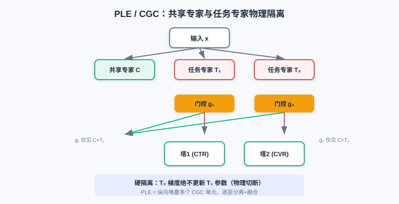

多目标优化
📝 Before You Continue: 建议先读完 3.1 Wide & Deep。多目标模型的"共享底座 + 任务塔"结构，正是 Wide&Deep 思想的延伸与多任务化。
前面的章节都在优化 单一目标 （通常是点击率）。但真实推荐系统几乎总是"既要又要"：电商要同时优化点击率（CTR）和转化率（CVR），内容平台要兼顾消费深度与广告曝光。当多个目标放到一个模型里，麻烦就来了——目标之间可能冲突，硬共享会导致"跷跷板"：提升一个就牺牲另一个。
本章我们沿着"如何缓解多任务冲突"的主线，从最朴素的 Shared-Bottom ，到 MMoE （多门控）、PLE （显式专家分离），再扩展到存在 依赖关系 的 ESMM / ESM2 ，最后讨论多损失如何 融合优化。核心始终是那句话：每个结构改进，都是为了解决前一个方法的什么不足。
读完本章，你将能够：
- 解释 Shared-Bottom 的"负迁移 / 跷跷板"问题，及其数学来源（梯度冲突）
- 说明 MMoE 如何用"每任务专属门控"实现梯度隔离，缓解冲突
- 描述 PLE（CGC） 如何显式分离共享专家与任务专家，进一步根除负迁移
- 用 ESMM 的"全空间建模"解释它如何化解 CVR 的样本选择偏差与数据稀疏
- 完成 4 道分层练习题，比较多目标结构与损失融合策略
3.4.0 动机：当目标不止一个
多目标建模与单目标最大的不同，是目标之间会 打架。比如在电商同时优化"点击率"和"客单价"：低价商品拉高点击却压低客单价；内容平台平衡"消费深度"与"广告曝光"时，深度阅读往往与广告点击负相关。
💡 Key Insight: 当任务 的梯度方向相反（），共享层参数更新就会陷入方向性矛盾——这叫负迁移，也常被称作跷跷板问题：提升一目标常以牺牲另一目标为代价。多目标模型的设计，本质就是"如何减少这种冲突"。
🧠 Mental Model: 一栋楼里的几家租户
把 Shared-Bottom 想成一栋共享地基的楼，每家租户（任务）在地基上盖自己的塔。地基便宜高效，但一家要改结构，整栋都可能裂——这就是负迁移。MMoE 给每家配了独立的电梯调度（门控），各家按需用不同专家；PLE 更彻底，给每家专属房间（任务专家）+ 公共客厅（共享专家），物理隔离、互不干扰。
3.4.1 基础结构：Shared-Bottom 与 MMoE
Shared-Bottom 是多目标奠基架构："共享地基 + 独立塔楼"。所有任务共用特征转换层 ，各自有任务塔 ：
它参数高效（共享层占大部分参数）、有正则化效应（防单任务过拟合）、能在相关任务间迁移知识。但致命缺陷是 负迁移 ：当任务本质冲突，硬共享的共享层梯度由所有任务共同决定，方向矛盾时优化陷入零和博弈。

Shared-Bottom 所有任务硬共享底层 ，各自盖独立任务塔 ；任务冲突时共享层梯度方向矛盾，陷入零和博弈（负迁移）。
MMoE（Multi-gate Mixture-of-Experts） 针对负迁移，把"全局共享的一个门控"升级为"每任务专属门控"。每个专家 被所有任务共享，但任务 有自己的门控 来加权融合专家：
当任务 冲突时，门控让两者学 不同的专家权重分布——某专家 在任务 门控里权重高、在任务 里权重低，于是 的参数更新主要由任务 的梯度决定，任务 影响很小，实现 梯度隔离。
左：Shared-Bottom 所有任务硬共享底层，冲突时负迁移。右：MMoE 每任务有专属门控，按需选专家，缓解冲突。
Analysis: MMoE 以"多门控"低成本缓解低相关任务冲突，参数效率仍高。局限：所有专家对所有任务门控可见——即便某专家被任务 门控忽略，其梯度在反传时仍可能流经它（潜在通路），强冲突下共享表征仍可能被污染；且门控需在所有专家上分配权重，专家变多时决策负担重。
3.4.2 PLE：显式专家分离
MMoE 的"软隔离"没根除负迁移： 干扰路径未切断 （专家仍对所有门控可见）、专家角色模糊 （一个专家可能既承载共享又承载多任务特定信息）。PLE（Progressive Layered Extraction）用 CGC（Customized Gate Control） 结构，通过 硬性结构约束 显式分离共享知识与任务特定知识。
CGC 把专家分成两类：
- 共享专家（C-Experts） ：只学所有任务共性，输出 。
- 任务专家（T-Experts） ：任务 专属，只学该任务特定模式，输出 。
关键约束：任务 的门控 输入被限制为"共享专家 + 本任务专属专家"， 完全无法访问 其他任务的专属专家。于是任务 的梯度绝不会更新任务 的专属专家参数——物理切断干扰路径。融合为：
PLE 把多个 CGC 单元 纵向堆叠 ，形成深层架构，逐层做"显式知识分离 + 融合"，实现渐进式提取。

CGC 中每任务只有"共享专家 + 自己专属专家"可见，其他任务的专属专家被物理隔离；PLE 纵向堆叠多个 CGC 单元，逐层深化。
💡 Key Insight: Shared-Bottom（硬共享）→ MMoE（软隔离，多门控）→ PLE（硬隔离，专家分离），是一条"冲突缓解逐步加强"的清晰主线。代价是 PLE 参数更多、结构更复杂，但换来更稳的多任务学习。
3.4.3 任务依赖建模：ESMM 与 ESM2
前面方法解决任务间"相关性冲突"，但现实任务常有明确 依赖关系。用户行为有天然时序链：曝光 → 点击 → 转化。传统 CVR 模型只在点击样本上训练，线上却要在全量曝光上预测，带来两大问题：
- 样本选择偏差（Sample Selection Bias） ：训练/预估样本分布不同，泛化差。
- 数据稀疏性（Data Sparsity） ：转化样本 = 曝光 × CTR × CVR（如 CTR≈2%、CVR≈0.5%，转化仅曝光万分之一），极稀疏。
ESMM（Entire Space Multi-task Model） 用概率图约束重建任务关系。它同时训 CTR 塔和 CVR 塔，但 不直接拿 CVR 算 Loss ，而是用 在全曝光空间算 Loss：
其中 用全量曝光样本（标准二分类交叉熵）， 用 在全空间算。这样 CVR 塔的梯度也在曝光空间进行 ，彻底化解样本选择偏差与稀疏性——CVR 塔借 CTR 塔的全量样本"间接"学好。
ESM2 把思想扩展到更长链路（曝光→点击→加购DAction→购买）。它设四个塔预测 （点击|曝光）、（决定行为|点击）、（购买|决定行为）、（购买|其他行为），但只算三个全空间 Loss（、、），同样都在曝光空间优化。最终 合并两条购买路径。

ESMM 同时训 CTR 与 CVR 塔，用 在全曝光空间算 Loss，使 CVR 梯度也来自全量样本，化解偏差与稀疏。
Analysis: ESMM/ESM2 的"全空间建模"思路巧妙地用乘积关系把依赖目标拉回同一训练空间，是处理任务依赖的标准解法。局限：它假设 CTR、CVR 建模共享底层（可用 MMoE/PLE 替换底座增强），且依赖"链路可分解为概率乘积"的业务假设。
3.4.4 多目标损失融合
当结构确定，多个损失的联合优化本身就是学问。朴素加权 有三个本质缺陷：量级失衡（CTR 损失 0.1–0.5，CVR 可达 2.0+，大损失主导）、收敛异步（稀疏任务慢）、梯度冲突（任务梯度夹角 >90° 时抵消）。主流自适应方法有三类：
- Uncertainty Weight（UWL） ：按任务不确定性 （可学习）动态调权，。损失大且不确定小则权重被压低，防被单任务带偏。
- GradNorm ：引入梯度损失，按"梯度量级 "与"相对训练速率 "动态调权，让各任务梯度量级与速率趋向均衡，避免快任务主导、慢任务欠拟合。
- Pareto Optimization ：当梯度方向根本冲突（优化 A 必损 B），用 KKT 条件把权重写成可学习变量，交替更新参数 与权重 （满足 ），把优化引向 帕累托前沿 （不存在不损一任务而改进另一任务的解）。
💡 Key Insight: 损失融合策略与网络结构正交——无论用 Shared-Bottom、MMoE 还是 PLE，都可在最外层套一层 UWL / GradNorm / Pareto 来平衡多损失。结构解决"表征冲突"，损失融合解决"优化冲突"。
⚠️ Common Mistakes in 3.4
| # | Mistake | Example | Why It's Wrong | Fix |
|---|---|---|---|---|
| 1 | 以为共享底座总有益 | "多任务一律用 Shared-Bottom 最省" | 任务冲突时硬共享导致负迁移（跷跷板） | 冲突任务改用 MMoE / PLE |
| 2 | 混淆 MMoE 与 PLE 隔离程度 | "MMoE 已经彻底分开了专家" | MMoE 是软隔离，专家仍对所有门控可见 | PLE 用 CGC 物理隔离任务专家 |
| 3 | 直接拿 CVR 塔算 Loss | "ESMM 和 MMoE 一样训 CVR" | 这会带来样本选择偏差与稀疏 | ESMM 用 全空间算 |
| 4 | 手工固定损失权重 | "w_ctr=1, w_cvr=1 就行" | 量级/收敛速度不同，大损失主导 | 用 UWL / GradNorm / Pareto 自适应 |
本章小结
📌 Key Takeaways
| Concept | Key Points | Why It Matters |
|---|---|---|
| 负迁移/跷跷板 | 梯度冲突 | 多任务硬共享的根本风险 |
| Shared-Bottom | 共享层 + 任务塔，参数高效 | 任务相关时好；冲突时负迁移 |
| MMoE 多门控 | 每任务专属门控选专家，梯度隔离 | 软隔离缓解冲突 |
| PLE/CGC | 共享专家 + 任务专家物理隔离 | 硬隔离，根除干扰路径 |
| ESMM 全空间 | 化解 CVR 偏差+稀疏 | |
| 损失融合 | UWL / GradNorm / Pareto | 解决优化层冲突 |
❓ FAQ
Q1: 我该用 Shared-Bottom、MMoE 还是 PLE？
A: 任务高度相关 → Shared-Bottom 够用且省；任务弱相关、有冲突 → MMoE；任务强冲突或需稳定 → PLE。本质是"冲突越强，隔离越硬"。
Q2: ESMM 一定要和 MMoE 一起用吗？
A: 不必。ESMM 是"全空间概率建模"思想，原论文底座可用简单 Shared-Bottom，也可替换为 MMoE/PLE 增强底层表征，二者正交。
Q3: 损失融合和选结构哪个更重要？
A: 都重要且互补。结构决定"表征能否分离冲突"，损失融合决定"多损失能否平衡优化"。工程中常先定结构，再调损失融合策略。
前后关联
- 3.5（多场景） 把"多任务差异"换成"多场景分布差异"，多塔/动态权重与 MMoE 思想同宗。
- 3.3（序列建模） 的 DIN 等常作为多目标模型的底层 backbone。
- Part 4 重排 在排序（多目标打分）之上优化列表级体验，多目标分数是重排输入。
Practice Problems
Work through all problems in order — they get progressively harder. Each has a complete solution you can reveal after trying it yourself.
Problem 3.4.1 — 识别负迁移 🟢 Easy
某内容 App 同时优化"消费深度（阅读时长）"与"广告曝光量"。工程师发现：提升广告曝光后，阅读时长明显下降。请判断这是否为负迁移，并说明数学上的成因。
💡 Solution (click to reveal)
Approach: 判断是否符合"提升一目标损害另一目标"的跷跷板特征，并用梯度冲突解释。
是负迁移。两目标呈负相关，共享层梯度方向相反：。Shared-Bottom 硬共享使参数更新方向矛盾，优化一个必损另一个，陷入零和。
Key points:
- 跷跷板 = 负相关目标的硬共享冲突。
- 解法：改用 MMoE/PLE 隔离冲突路径。
Problem 3.4.2 — MMoE vs PLE 🟢 Easy
判断下列说法正误并改正：
- (a) MMoE 中每个任务有专属门控，因此任务间已无梯度干扰。
- (b) PLE 的 CGC 让任务 的门控也能看到任务 的专属专家。
💡 Solution (click to reveal)
Approach: 抓"软隔离 vs 硬隔离"的区别。
- (a) 错误 ：MMoE 是软隔离——专家仍对所有门控可见，即便被忽略，反传时梯度仍可能流经它（潜在通路）。PLE 才物理隔离。
- (b) 错误 ：CGC 硬性约束任务 门控 输入仅为"共享专家 + 本任务专属专家"， 完全看不到 其他任务专属专家；任务 梯度不会更新任务 专属专家。
Key points:
- MMoE=软隔离；PLE/CGC=硬隔离。
- 隔离程度递进：Shared-Bottom < MMoE < PLE。
Problem 3.4.3 — ESMM 动机 🟡 Medium
为什么传统 CVR 模型在"点击样本上训练、全量曝光上预测"会出问题？ESMM 如何用 解决？
💡 Solution (click to reveal)
Approach: 从样本空间不一致 + 稀疏两个角度切入。
传统 CVR 只在点击样本（CTR 正样本）训练，但线上要对全量曝光预估，训练/预估分布不同 → 样本选择偏差 ，泛化差；且转化样本极稀疏（曝光×CTR×CVR），难学。
ESMM 同时训 CTR 与 CVR 塔，但 CVR 不直接算 Loss，而是用 在全曝光空间算 。于是 CVR 塔梯度经 来自 全量曝光样本 ，偏差与稀疏都被化解——CVR 间接借 CTR 的全量数据学好。
Key points:
- 偏差根因：训练空间（点击）≠ 预估空间（曝光）。
- 解法：乘积关系把 CVR 拉回全空间。
Problem 3.4.4 — 证明负迁移的梯度冲突 🔴 Hard
设共享参数 同时服务任务 1、2，损失变化近似 。若采用统一梯度下降 ，且已知 （夹角 >90°），请证明：至少其中一个任务的损失会上升。
💡 Solution (click to reveal)
Approach: 代入 看各任务损失变化。
。因 ，第二项为正，会 抵消 第一项的下降；若 ，则 ，任务1损失上升。同理对任务2对称成立。既然两梯度反向，统一更新方向不可能同时让两者下降——必有一方受损，这正是跷跷板/负迁移的数学本质。
Key points:
- 梯度反向 → 共享参数更新方向"两难"。
- 这解释了为何需 MMoE/PLE 隔离、或 Pareto 优化找不损解。
🏆 Challenge: 设计多目标方案
某电商要同时优化 CTR、CVR、客单价三目标，其中 CTR 与 CVR 有依赖（ESMM 式），CVR 与客单价常冲突（跷跷板）。请组合合适结构并说明理由（150 字内），并指出损失融合策略。
💡 Hint
底层用 PLE/CGC 隔离 CVR 与客单价冲突（硬隔离）；CTR-CVR 依赖用 ESMM 式乘积 在全空间联合（可把 CTR/CVR 塔放进共享底座）。损失层用 GradNorm 或 UWL 自适应平衡三损失量级与收敛速度。